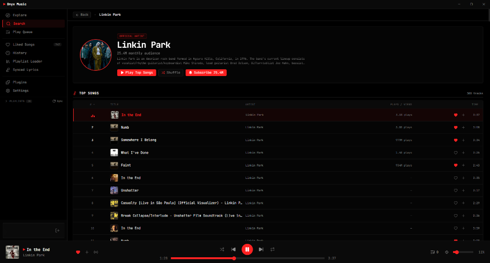

Pure sound.
Zero bloat.
Done right.
Engineered with Tauri v2, Rust 2024, and SolidJS. A true OLED dark aesthetic with an ultra-lean runtime, direct WASAPI audio pipeline, interactive synced lyrics, and built-in SponsorBlock.

Engineered for speed, not bloat.
Direct measurements captured from Windows 11 Task Manager during active playback. Zero marketing fluff.
| System Metric | Electron Clones (Spotify / Chrome) | Onyx Music v0.2.0 (Measured) |
|---|---|---|
| UI Process Memory (RAM) Dedicated memory for the primary rendering thread | ~450 – 700 MB | 79.9 MB (9x lighter) |
| Total Runtime Tree (All 7 Processes) UI, GPU, Audio Service, Network, Storage & Crashpad combined | ~850 – 1,400 MB | 237.8 MB Total |
| Active Playback CPU Load Processor utilization during steady-state music streaming | 2.5% – 6.0% | 0.1% (Near-zero drain) |
| Audio Utility Process Footprint Background audio rendering & buffer service | ~35 – 60 MB | 3.4 MB (0.0% CPU) |
| Cold Startup Latency Time from click to fully interactive UI | ~4.0s – 5.5s | < 0.8s (Near-instant) |
| Installer & Standalone Size Download bandwidth and disk footprint | ~180 MB | 2.1 MB Setup / 6.5 MB Portable |
| Massive Playlist Virtualization DOM nodes mounted when browsing 3,000+ track collections | 3,000+ DOM nodes (Memory spikes to 600MB) | Strictly 35 DOM rows (Constant memory) |
The Four Pillars of Onyx.
Everything you wished official YouTube Music had, built with zero compromises.
Interactive Synced Lyrics
Sub-millisecond karaoke synchronization with smooth viewport centering. If a song drifts out of sync, press Alt + Click on any lyric to recalibrate timing in real-time.
Built-In SponsorBlock
Automatically detects and skips music video intros, outros, sponsor mentions, and silent gaps. Experience uninterrupted music flow without touching your mouse.
Direct WASAPI & Parametric EQ
Dual-slot gapless audio engine with configurable 0–12s hardware crossfade. Direct WASAPI 24-bit output, 3-band parametric equalizer, and real-time pitch-preserving speed regulation (0.5x – 2.0x).
Massive Playlist Virtualization
Scroll through 3,000+ song libraries at a solid 120 FPS. Only the visible window (~35 DOM rows) is ever mounted into memory, eliminating lag, memory bloat, and layout thrashing.
Download Onyx Music v0.2.0
Free, open-source, and privacy-respecting. Pick the package that best fits your setup.
Windows Installer
- Windows Start Menu & Desktop shortcuts
- Windows Search (Win + S) integration
- Persistent Launch on Startup option
- Clean one-click uninstaller
Portable Binary
- Zero installation required
- Runs directly from USB or any folder
- Leaves no registry footprint
- Self-contained portable execution